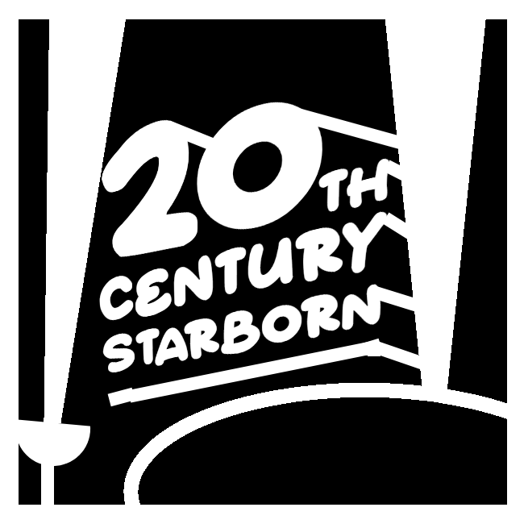

A century-long cinematic tradition of timeless storytelling, pioneering vision, and artistic mastery since 1913.
Explore Our LegacyEstablished in the dawn of Hollywood's golden era in 1913, the Starborn Film Corporation has stood as a beacon of cinematic excellence. From the pioneering days of silent features to the grandeur of modern widescreen epics, our studio has shaped the cultural landscape of global entertainment.
Through decades of innovation, technological breakthroughs, and unforgettable performances, we have remained true to our founding mantra: crafting stories that resonate across generations and reach for the stars.
Born from a historic joint venture uniting two powerful creative forces:
Establishing the studio's foundations with ground-breaking silent epics, elaborate set designs, and international distribution networks.
The introduction of sound and color, launching iconic Hollywood legends and producing legendary masterpieces that defined studio-era cinema.
Embracing new technological standards, widescreen formats, groundbreaking visual effects, and globally beloved blockbusters.
Celebrating over 100 years of filmmaking excellence by merging classic cinematic soul with state-of-the-art digital production.